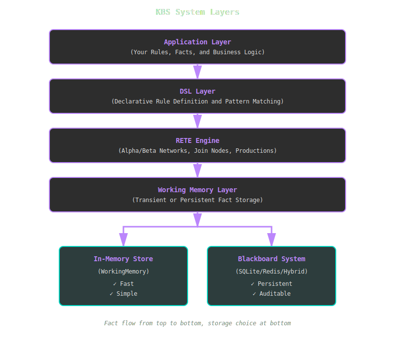
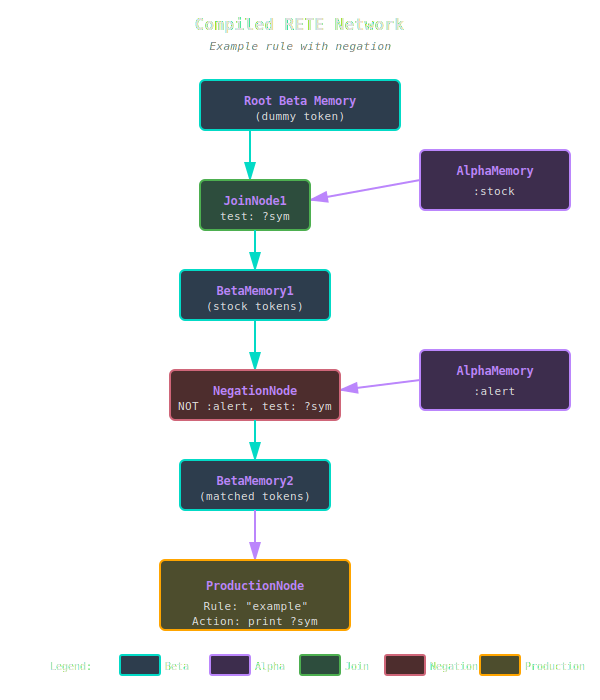

Architecture Overview¶
KBS is built on a layered architecture that separates concerns while maintaining high performance.
System Layers¶

KBS uses a layered architecture where facts flow from your application through the DSL, RETE engine, and working memory to one of two storage backends.
Core Components¶
1. RETE Engine¶
The heart of KBS. Implements Charles Forgy's RETE algorithm with modern optimizations.
Key Files:
- lib/kbs/rete_engine.rb - Main engine coordinator
- lib/kbs/alpha_memory.rb - Pattern-level fact storage
- lib/kbs/beta_memory.rb - Token (partial match) storage
- lib/kbs/join_node.rb - Inter-condition joins
- lib/kbs/negation_node.rb - Negated condition handling
- lib/kbs/production_node.rb - Rule firing coordination
Responsibilities: - Compile rules into discrimination networks - Propagate fact changes through the network - Maintain partial matches (tokens) - Fire rules when all conditions are satisfied
Learn more: RETE Algorithm Details
2. Working Memory¶
Stores facts and notifies the RETE engine of changes using the Observer pattern.
Variants:
- WorkingMemory: Transient in-memory storage
- Blackboard::Memory: Persistent storage with audit trails
Responsibilities: - Store facts - Notify observers when facts are added/removed - Support queries and bulk operations
Learn more: Blackboard Architecture
3. DSL Layer¶
Provides a Ruby-native interface for defining rules, conditions, and patterns.
Key Classes:
- Rule - Production rule with conditions and actions
- Condition - Pattern specification for fact matching
- Fact - Knowledge representation unit
Example:
Rule.new("alert") do |r|
r.conditions = [
Condition.new(:sensor, { temp: :t? }),
Condition.new(:threshold, { max: :max? })
]
r.action = lambda { |facts, bindings|
puts "Alert!" if bindings[:t?] > bindings[:max?]
}
end
4. Blackboard System¶
Multi-agent collaboration framework with persistent shared memory.
Components: - Memory - Central workspace for facts - MessageQueue - Priority-based agent communication - AuditLog - Complete history of changes - Persistence - Pluggable storage backends (SQLite, Redis, Hybrid)
Use Cases: - Multi-agent problem solving - Audit requirements - Long-running systems - Distributed reasoning
Learn more: Blackboard System Details
Data Flow¶
Adding a Fact¶
User Code
│
├─→ engine.add_fact(:stock, price: 150)
│
▼
WorkingMemory.add_fact(fact)
│
├─→ @facts << fact
└─→ notify_observers(:add, fact)
│
▼
Engine.update(:add, fact)
│
└─→ For each AlphaMemory:
if fact.matches?(pattern)
│
▼
AlphaMemory.activate(fact)
│
└─→ JoinNode.right_activate(fact)
│
└─→ Create tokens, propagate...
│
▼
ProductionNode
Firing Rules¶
User Code
│
├─→ engine.run()
│
▼
For each ProductionNode:
│
├─→ For each token:
│ │
│ └─→ rule.fire(token.facts)
│ │
│ └─→ Extract bindings
│ │
│ └─→ Execute action lambda
│ │
│ └─→ User code in action
│
└─→ Mark tokens as fired
Network Compilation¶
When you add a rule, KBS compiles it into a discrimination network:
rule = Rule.new("example") do |r|
r.conditions = [
Condition.new(:stock, { symbol: :sym? }),
Condition.new(:alert, { symbol: :sym? }, negated: true)
]
r.action = ->(facts, bindings) { puts bindings[:sym?] }
end
engine.add_rule(rule)
Compiled Network:

The rule compiles into a network with alpha memories for each condition type, join nodes to combine matches, a negation node for the NOT condition, and a production node that fires when all conditions are satisfied.
Learn more: Network Structure
Performance Characteristics¶
| Operation | Complexity | Notes |
|---|---|---|
| Add rule | O(C × F) | C = conditions, F = existing facts |
| Add fact | O(N) | N = activated nodes (typically << total) |
| Remove fact | O(T) | T = tokens containing fact |
| Fire rules | O(M) | M = complete matches |
| Network sharing | O(1) | Same pattern → same alpha memory |
Design Principles¶
1. Algorithm Fidelity¶
Maintain RETE correctness per Forgy's specifications. No shortcuts that break semantics.
2. Separation of Concerns¶
- Engine: Pattern matching
- Memory: Storage
- DSL: User interface
- Blackboard: Collaboration
Each component is independently testable and swappable.
3. Performance Through Clarity¶
Optimize algorithm first (unlinking, network sharing), then profile before micro-optimizations.
4. Testability¶
Every method testable in isolation. Dependency injection for external services.
5. Graceful Degradation¶
Optional features (Redis, AI) don't block core functionality. Fallback to SQLite or in-memory.
6. Auditability¶
Complete audit trails for production systems. Know why a rule fired.
Extension Points¶
Custom Persistence¶
Implement KBS::Blackboard::Persistence::Store:
class MyStore
def save_fact(fact) ... end
def load_facts(type) ... end
def delete_fact(id) ... end
# ...
end
engine = KBS::Blackboard::Engine.new(store: MyStore.new)
Custom Pattern Matching¶
Override Fact#matches?:
Custom Rule Actions¶
Actions are lambdas - inject any Ruby code:
r.action = lambda do |facts, bindings|
send_email(bindings[:alert?])
log_to_database(facts)
trigger_api_call(bindings)
end
File Organization¶
lib/kbs/
├── rete_engine.rb # Main engine
├── working_memory.rb # Fact storage
├── fact.rb # Fact representation
├── rule.rb # Rule definition
├── condition.rb # Pattern specification
├── token.rb # Partial match
├── alpha_memory.rb # Pattern-level cache
├── beta_memory.rb # Token storage
├── join_node.rb # Inter-condition joins
├── negation_node.rb # Negated conditions
├── production_node.rb # Rule firing
└── blackboard/ # Persistent memory
├── engine.rb # Blackboard-aware RETE
├── memory.rb # Central workspace
├── fact.rb # Persisted fact
├── message_queue.rb # Agent communication
├── audit_log.rb # Change history
└── persistence/ # Storage backends
├── store.rb # Abstract interface
├── sqlite_store.rb
├── redis_store.rb
└── hybrid_store.rb
Next Steps¶
- RETE Algorithm - Deep dive into pattern matching
- Blackboard System - Persistent memory architecture
- Network Structure - How rules compile into networks
- API Reference - Complete class documentation